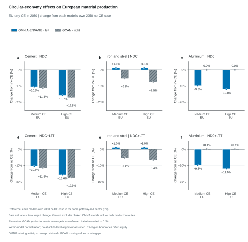
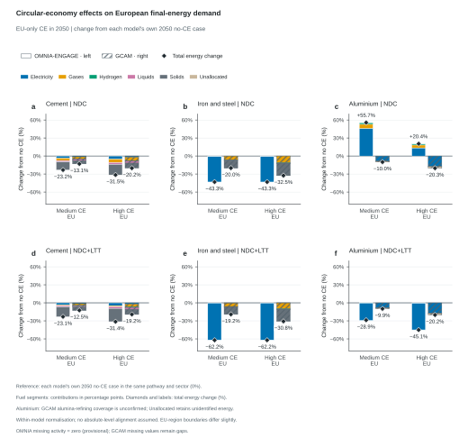
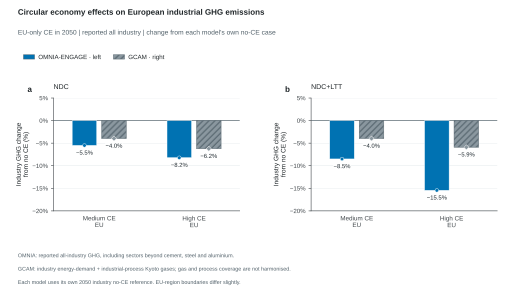
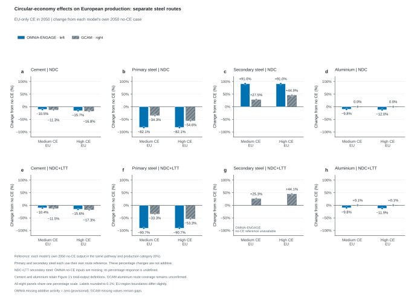

4 figures show 2050 percentage changes from each model's own no-CE case: production, final energy, and emissions. The emissions figure compares combined cement, steel and aluminium responses in two panels, with NDC on the left and NDC+LTT on the right. Both pathways retain medium/high EU-only CE. An additional production figure separates primary and secondary steel, each relative to its own route's no-CE output.
No CE is 0% by construction within each model, pathway and reference scope. This normalisation does not establish agreement in absolute levels or harmonise process boundaries. Emissions bars sum cement, iron and steel, and aluminium only in both models. OMNIA reports sector GHG; GCAM reports sector CO2, with cement energy and processes plus reported steel/aluminium energy CO2. These inventories remain source-defined. Aluminium production and energy process coverage remain unconfirmed. The absolute-value comparison remains available.
Circular-economy effects on European material production
How much does EU-only CE change material output relative to each model's no-CE case?

Percentage changes in European material production in 2050, with NDC above NDC+LTT and cement, iron and steel, and aluminium columns. Each policy category pairs OMNIA-ENGAGE on the left with hatched GCAM on the right. The medium and high EU-only CE scenarios are compared with each model's own no-CE scenario in the same pathway, sector and year: 100 × (CE output − no-CE output) / no-CE output. No CE is the zero reference by construction. The same percentage scale is used across all six panels. Markers identify observed values, including near-zero responses; labels are rounded to 0.1% and are not the plotting coordinates. Missing values remain gaps. Cement excludes clinker; OMNIA metal output sums primary and secondary routes, while GCAM uses its source-reported metal series. GCAM aluminium's route coverage is unconfirmed. Route contributions are exported as context but are not stacked in this total-output figure. The updated GCAM workbook also reports primary and secondary steel; the optional Figure 4 compares those routes using their own no-CE production references. Normalisation focuses on within-model CE responses and does not establish agreement in absolute production or energy levels, or harmonise the models' process boundaries. Historical bars are omitted because these are matched-year CE contrasts. OMNIA sums EUE, EUM and EUW; GCAM selects its EU-27 aggregate once. The OMNIA regions include some small non-EU countries and territories. Only medium/high CE applied in the EU enters; EU+ cases are excluded. Raw source quantities, reference totals, exact variables, regions and calculation coefficients accompany every result. A missing, nonfinite or nonpositive reference makes the response undefined.
Figure 2
Circular-economy effects on European final-energy demand
How do fuels contribute to the total-energy response to EU-only CE?

Changes in European final-energy demand in 2050, with NDC above NDC+LTT and cement, iron and steel, and aluminium columns. Paired bars place OMNIA-ENGAGE on the left and hatched GCAM on the right. Every fuel segment is 100 × (CE carrier energy − no-CE carrier energy) / no-CE total sector energy, using the same model, pathway, sector and year. These segments are percentage-point contributions to the total-energy percentage change; they are not carrier-specific percentage changes. Positive and negative contributions stack independently from zero. Black diamonds and signed labels show the net total-energy percentage change. All six panels share one percentage scale, retaining increases as well as decreases. Exact carrier parents are selected once. GCAM's total-energy reference retains its reported sector parent; Unallocated is the reported parent minus supplied carrier parents in each scenario. Its change remains an unidentified contribution, with no fuel or process attribution. GCAM aluminium's alumina-refining coverage is unconfirmed. Normalisation focuses on within-model CE responses and does not establish agreement in absolute production or energy levels, or harmonise the models' process boundaries. Historical bars are omitted because these are matched-year CE contrasts. OMNIA sums EUE, EUM and EUW; GCAM selects its EU-27 aggregate once. The OMNIA regions include some small non-EU countries and territories. Only medium/high CE applied in the EU enters; EU+ cases are excluded. Raw source quantities, reference totals, exact variables, regions and calculation coefficients accompany every result. A missing, nonfinite or nonpositive reference makes the response undefined.
Figure 3
Circular economy effects on European material-sector emissions
How do combined cement, steel and aluminium emissions respond to circular economy?

EU-only CE effects on combined European cement, iron-and-steel and aluminium emissions in 2050, with NDC on the left and NDC+LTT on the right. Panels a,b retain paired OMNIA-ENGAGE solid bars on the left and GCAM hatched bars on the right. Each bar is 100 × (sum of three-sector CE emissions − sum of three-sector no-CE emissions) / sum of three-sector no-CE emissions, within the same model, pathway, geography and year. Sector percentages are not averaged. Other industry is excluded from numerator and denominator. OMNIA sums its three reported Emissions|GHG|Industry sector children in MtCO2e/yr. GCAM sums reported CO2 in Mt CO2/yr from Emissions|CO2|Energy|Demand|Industry|Non-Metallic Minerals and Emissions|CO2|Industrial Processes|Non-Metallic Minerals|Cement for cement, Emissions|CO2|Energy|Demand|Industry|Iron and Steel, and Emissions|CO2|Energy|Demand|Industry|Non-Ferrous Metals|Aluminum. The non-metallic-minerals energy category is assigned to cement: its final-energy parent equals the cement child throughout the supplied workbook. Overlapping cement-process and non-ferrous parents are not added. No additional steel/aluminium process-CO2 child or complete sector Kyoto/GHG inventory is supplied. This therefore compares OMNIA sector GHG responses with GCAM's reported sector CO2 responses; gas coverage, GWP conventions and process boundaries remain source-defined. Scales match across climate columns. Reported negative emissions are retained, and carbon capture is not subtracted again. NDC+LTT aluminium GHG is blank in all three OMNIA EU regions for no CE and both CE cases in 2050; the configured provisional zero treatment is retained and flagged, without establishing physical zero emissions. All-industry responses and sector contributions remain unplotted CSV context with Plotted=False. Source quantities, signed changes, reference totals, variables, units, coefficients, missing treatments and regions accompany the CSVs. Only medium/high EU-only CE enters. OMNIA sums EUE, EUM and EUW; GCAM selects EU-27 once. These boundaries differ slightly. No CE is zero by construction, which does not establish absolute-level alignment or harmonise the source inventories.
Figure 4
Circular-economy effects on European production: separate steel routes
How do primary and secondary steel production respond alongside cement and aluminium?

European production responses to medium/high EU-only CE in 2050, with NDC above NDC+LTT. Columns show cement, primary iron and steel, secondary iron and steel, and aluminium. Each category pairs OMNIA-ENGAGE solid bars on the left with GCAM hatched bars on the right. Every value is 100 × (CE output − no-CE output) / no-CE output for the same model, climate pathway, geography, production category and year. Primary and secondary steel use their own route-specific no-CE production in the denominator, not total steel production. These are output changes, not changes in route shares or percentage-point contributions, and the two route percentages are not additive. OMNIA selects Production|Iron and Steel|Primary and Production|Iron and Steel|Secondary; GCAM selects Production|Iron and Steel|Steel|Primary and Production|Iron and Steel|Steel|Secondary. All production source units are Mt/yr. A source check compares GCAM's primary-plus-secondary sum with its reported steel parent for each selected scenario and year, without filling missing GCAM values with zero. Cement excludes clinker. Aluminium retains OMNIA primary-plus-secondary output and GCAM's reported aluminium output; GCAM aluminium route coverage remains unconfirmed. Cement and aluminium responses equal those in Figure 1. All eight panels share a percentage scale; signed increases and decreases are retained. Markers identify observed values, including zero; labels round to 0.1% while bar coordinates and CSV values retain full precision. Unavailable, nonfinite or nonpositive no-CE references give gaps. OMNIA no-CE secondary steel is blank in all three EU regions under NDC+LTT. Its configured provisional zero treatment yields a zero route reference; the percentage remains undefined, as it does when the blanks are preserved, and no OMNIA response is drawn in panel g. Normalisation focuses on within-model CE responses and does not establish agreement in absolute production or energy levels, or harmonise the models' process boundaries. Historical bars are omitted because these are matched-year CE contrasts. OMNIA sums EUE, EUM and EUW; GCAM selects its EU-27 aggregate once. The OMNIA regions include some small non-EU countries and territories. Only medium/high CE applied in the EU enters; EU+ cases are excluded. Raw source quantities, reference totals, exact variables, regions and calculation coefficients accompany every result. A missing, nonfinite or nonpositive reference makes the response undefined.